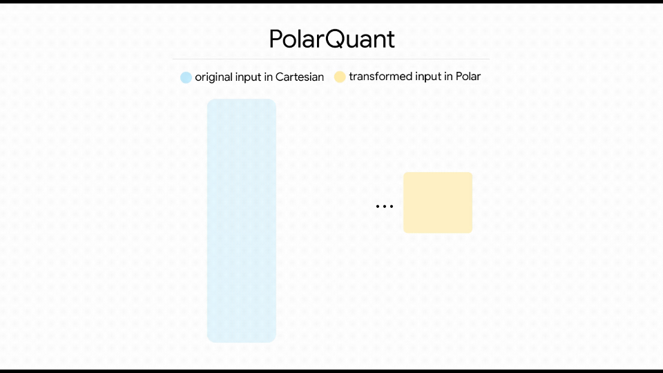

Bins are decided by the original min and max
The running vector has min = -10.20 and max = 9.80, so 16 bins must cover a 20-point range. The step is (9.80 - -10.20) / 15 = 1.333.
Visual guide
LLM vectors often look smooth in meaning but spiky in coordinates. TurboQuant makes them easier to compress by changing the coordinate story, then storing the leftover error as tiny sign bits.
Running example
We will use the same 8-dimensional key/value style vector throughout the page. Real LLM vectors are much larger, but this small one makes the mechanics visible.
x = [0.12, -0.08, 0.15, 9.80, -0.11, 0.06, -10.20, 0.18]
1. The problem
The vector is not sparse because most entries are nonzero. But it is quasi-sparse because two channels carry almost all of the magnitude. A normal low-bit quantizer must cover the whole range from about -10 to +10, so subtle values around 0.1 get crushed into coarse buckets.
The running vector has min = -10.20 and max = 9.80, so 16 bins must cover a 20-point range. The step is (9.80 - -10.20) / 15 = 1.333.
2. Random rotation
An orthogonal random rotation changes the coordinate system, not the information. Distances, angles, inner products, and cosine relationships are preserved when compatible vectors are rotated the same way. What changes is that the energy gets spread across many coordinates instead of sitting in a few outlier channels.
(Rq) dot (Rk) = q dot k
That is why rotation can help quantization without changing the semantic geometry.
After rotation, the example coordinates sit between -5.02 and 5.31. The 4-bit bins are closer together, and no single dimension owns the whole scale.
3. PolarQuant
PolarQuant groups coordinates into pairs and rewrites each pair as a radius and an angle. A pair like (0.15, 9.80) no longer means "one tiny value beside one huge outlier." It means "a long vector pointing almost vertical."
The radius carries magnitude. The angle carries how that magnitude is split between the two coordinates. The small coordinate survives because it changes the angle.

(0.15, 9.80) are binned by radius and angle before dequantization. Open the referenced MP4.
PolarQuant bins each pair by radius and angle. The large pair (0.15, 9.80) keeps the fact that it points almost straight up, instead of treating 0.15 as noise beside an outlier.
4. QJL residual bits
PolarQuant captures most of the vector. It still leaves a small residual error. TurboQuant's product-oriented version uses a one-bit Quantized Johnson-Lindenstrauss correction: project the residual in random directions and store only whether each projection is positive or negative.
The residual is just the quantization mistake left after dequantizing the PolarQuant code: residual = original vector - dequantized PolarQuant vector. For the running example, if d4 starts as 9.800 and PolarQuant reconstructs it as 9.807, then the residual at that dimension is 9.800 - 9.807 = -0.007.
QJL is not trying to store every residual coordinate exactly. It takes random dot products with that residual and stores only the sign of each result. Those signs preserve useful correction information for inner products without storing another full vector.
x_hat = [0.121, -0.079, 0.148, 9.807, -0.108, 0.061, -10.191, 0.177]
[0.120, -0.080, 0.150, 9.800, -0.110, 0.060, -10.200, 0.180] - x_hat
[-.001, -.001, +.002, -.007, -.002, -.001, -.009, +.003]
Each bit is 1 when one random projection of the residual is positive, and 0 when it is negative. During scoring, those signs help correct the bias left by the quantized approximation.
Application 1
For vector search, the expensive thing is storing and scanning millions or billions of document embeddings. A practical design keeps documents compressed, keeps the query in FP32, searches compressed codes for candidate recall, then dequantizes only the top candidates for a better cosine rerank.
[0.12, -0.08, ..., -10.20]
Rotate, polar-quantize, store QJL residual bits.
r, theta codes + 01011001
Metadata points back to document text and chunk id.
q = embedding("budget laptop")
No memory reason to quantize one temporary query.
top 1000 candidates
Fast approximate scan over compressed representations.
cosine(q_fp32, x_hat)
Recover accuracy where it matters: the final shortlist.
Standard min-max quantization uses one grid for the whole vector, so the two outliers consume most of the 16 buckets. TurboQuant first changes the coordinate story, then stores compact codes plus residual signs, so dequantized shortlist vectors stay closer to the original.
| Dim | Original | Standard 4-bit step | Standard code | Standard dequant | TurboQuant step | TurboQuant code | TurboQuant dequant |
|---|
Android benchmark app
This repo now includes a native Android app that can download either the first 50,000 or first 1,000,000 Cohere 768-dimensional vectors, then benchmarks every available dataset in one table. Downloads and benchmarks run in foreground services, continue with the app backgrounded or screen off, and resumable downloads keep saved partial files. The app builds FP32 exact, bundled HNSW, and TurboQuant indexes on-device, caps raw database staging at 100 MB, and reports recall, index size, RAM, and warm query latency.
2-bit TurboQuant over 50K vectors, top-10 search.
99.20% random R@1, 100.00% random R@10, 18.5 MB index.
FP32 brute-force exact scan over 50,000 x 768 floats.
| Method | Dataset | Vectors | Bits | Self R@1 | Self R@10 | Random R@1 | Random R@10 | Index ms | Prep ms | Write ms | Self ms | Random ms | us/query | ROM | RAM delta |
|---|
Why native Rust is fast
A foreground service enters native Rust once. Dot products, HNSW graph search, quantization, top-k heaps, blocked layout, and search kernels run in optimized release Rust.
prepare() repacks compact codes into 32-vector blocks so a query scans contiguous bytes instead of chasing one vector at a time.
2/3/4-bit search uses ARM NEON table lookups and vector accumulators. The query stays FP32, but database codes remain compressed.
8-bit has full byte codes, so the app precomputes exact query x centroid lookup rows with NEON and then scans contiguous block-major code bytes.
Application 2
During generation, every previous token leaves key and value vectors in the KV cache. Long context makes that cache huge. Quantizing it reduces memory bandwidth and lets the model keep longer histories or serve more users.
The catch is accuracy: attention depends on dot products between the current query and cached keys. TurboQuant targets this by preserving geometry and correcting residual inner-product bias.
KV-cache mechanics
TurboQuant does not replace attention. It changes how past keys and values are stored. New K/V vectors are compressed as they enter the cache. Later, attention kernels read compressed blocks, reconstruct approximate K/V values only for the current computation, and discard those temporary values.
The model creates normal full-precision key and value vectors for the newest token.
Random rotation smooths channels, PolarQuant stores radius plus angle, and QJL stores the residual as sign bits.
The long-context memory footprint shrinks because the cache keeps compact codes instead of full tensors.
The query is temporary, so there is little memory benefit in storing it compressed. If cached keys live in rotated space, the query is rotated at runtime before scoring.
q_rot = R q_current
Yes, but usually it is fused into the attention kernel. The full cache is not permanently expanded. A block is loaded, dequantized into registers or fast local memory, used for dot products or value accumulation, then discarded.
Keys must preserve attention scores, so the rotated query and reconstructed keys must keep dot products close. Values must preserve the final weighted representation, so the value approximation must be accurate after softmax weights are applied.
Long prompts repeatedly read old K/V vectors. Compression reduces cache memory and memory bandwidth, which can unlock larger context windows, higher batch sizes, or faster attention on suitable kernels.
cache stores codes; attention uses K_hat and V_hat temporarily
The model still computes normal attention, but the cache representation is compact.
Reported results
The TurboQuant paper reports quality neutrality around 3.5 bits per channel for KV-cache quantization and marginal degradation around 2.5 bits per channel. Public Google coverage reported long-context evaluations such as Needle in a Haystack, LongBench, RULER, ZeroSCROLLS, and L-Eval on open models including Gemma and Mistral. Media coverage also reported at least 6x KV-cache memory reduction and up to 8x faster attention-logit computation on H100 GPUs.